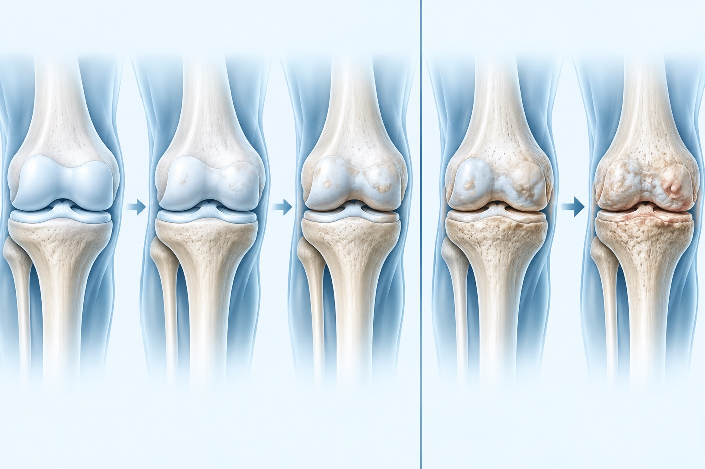

Clinical insights
Why Do Some Knees Develop Osteoarthritis Faster?
Two people with apparently similar knee symptoms can follow very different paths. It is not simply a question of how well they look after their knees. Age, previous injury, body weight, joint loading and changes in the meniscus, muscles or bone beneath the cartilage may interact.

What does rapid progression mean?
Researchers use accelerated knee osteoarthritis for progression from no clear radiographic disease to advanced radiographic osteoarthritis over a few years. Several studies define it as progression to advanced disease within four years, with many affected knees changing within about twelve months. It is a research definition, not a diagnosis to apply after one painful week. A review of Osteoarthritis Initiative data estimated that at least one in seven people with incident radiographic osteoarthritis followed this faster trajectory.
Sudden pain does not automatically mean rapid structural deterioration. Symptoms and radiographic findings do not always move together. The history, function and targeted imaging when clinically indicated can clarify an unusual course.
Osteoarthritis involves the whole joint, not cartilage alone
Knee osteoarthritis is often described as 'wear and tear', but that is too simple. Cartilage, meniscus, subchondral bone, synovium, ligaments and muscles operate as one system. The interaction between tissues, loading and the body's capacity to adapt matters more than any single structure.
Large systematic reviews identify factors such as older age, previous knee injury, higher body mass index and some anatomical or mechanical characteristics. Factors associated with developing osteoarthritis are not necessarily the same factors that determine how quickly established disease progresses. Risk also describes probability in a group, not an individual destiny.
Injury and the meniscus can change loading rapidly
A previous cruciate ligament or meniscal injury increases the long-term risk of knee osteoarthritis, but the outcome is not predetermined. An international systematic review following traumatic knee injury indicates that injury severity, meniscal injury or loss of meniscal tissue and other concomitant joint damage may influence later risk.
New destabilising meniscal tears are especially relevant in accelerated disease. A root tear can reduce the meniscus's ability to distribute pressure, while extrusion means that it is displaced outwards from the joint line. Both are associated with faster structural change in observational studies. This does not mean that every tear needs surgery, but a sudden change with swelling, mechanical symptoms or marked loss of function deserves a specific assessment.
Alignment, muscle strength and loading interact
Systematic reviews link marked varus or valgus alignment and higher loading moments during walking with knee osteoarthritis onset or progression. This concerns how forces are distributed through the knee; it does not mean that someone has the 'wrong' body or walks incorrectly. Findings vary between studies, and alignment alone cannot predict an individual course.
Lower knee extensor strength is also associated with a greater risk of developing knee osteoarthritis in a large meta-analysis. Muscle capacity is modifiable: improving strength and control can increase capacity, reduce symptoms and make everyday loading easier, even though exercise cannot guarantee that radiographic change will stop.
Bone marrow lesions and the synovium are dynamic
MRI can show bone marrow lesions beneath the cartilage, synovitis and joint fluid. These findings may fluctuate and, at group level, are associated with pain or later cartilage loss. They may help explain why a knee enters a more irritable phase, but they are neither a direct measure of pain nor a certain forecast of rapid deterioration.
An MRI report should therefore be interpreted alongside symptom development, examination findings and what the person can actually do. Searching for ever more abnormalities when the result would not change management may create more concern than benefit.
Does activity wear the knee out?
It is easy to interpret osteoarthritis as a reason to use the knee as little as possible. Research does not support that message. An international individual participant data meta-analysis found no clear association between ordinary recreational physical activity, including more vigorous activity, and incident radiographic or symptomatic knee osteoarthritis. It cannot answer for every extreme load or every injured knee, but it supports avoiding the message that movement itself is dangerous.
Load still needs to be dosed. A practical approach is to monitor pain, swelling and function during activity and over the following day. If a flare persists, the amount, intensity or exercise selection can be adjusted. The aim is progressively greater capacity, not pushing through every reaction.
What can be changed?
Regular adapted activity and strengthening are central. When relevant, weight loss can reduce cumulative joint load and improve symptoms, but it should be discussed without blame or simplistic explanations. Sleep, other health conditions, work, expectations and the practical ability to follow a programme also influence the course and belong in the plan.
A new injury, rapidly increasing swelling, locking, pronounced rest pain, fever or a major loss of function needs assessment rather than a generic instruction to move more. NICE recommends a clinical diagnosis for typical osteoarthritis and advises against routine imaging when it would not change care. In an atypical course, radiography, MRI or referral may be appropriate.
How I approach it
I start with the timeline: did the change develop gradually, after a specific injury, or together with swelling and mechanical symptoms? I then assess gait, weight-bearing capacity, movement, strength, alignment and signs that may implicate the meniscus or other structures. Imaging is used when the result may change the decision, not simply to assign an X-ray grade. Treatment is progressed in stages, with systematic reassessment of symptoms and function. If the course differs from what we expected, the working hypothesis and plan must change.
Sources
- Video – starting point for this article: YouTube. Claims checked against the research below.
- Driban JB et al. «Risk factors and the natural history of accelerated knee osteoarthritis: a narrative review». BMC Musculoskeletal Disorders. 2020. Source.
- Duong V et al. «Risk factors for the development of knee osteoarthritis across the lifespan: A systematic review and meta-analysis». Osteoarthritis and Cartilage. 2025. Source.
- Whittaker JL et al. «Risk factors for knee osteoarthritis after traumatic knee injury: a systematic review and meta-analysis of randomised controlled trials and cohort studies for the OPTIKNEE Consensus». British Journal of Sports Medicine. 2022. Source.
- Foreman SC et al. «Meniscal Root Tears and Extrusion Are Significantly Associated with the Development of Accelerated Knee Osteoarthritis». Cartilage. 2021. Source.
- van Tunen JAC et al. «Association of malalignment, muscular dysfunction, proprioception, laxity and abnormal joint loading with tibiofemoral knee osteoarthritis – a systematic review and meta-analysis». BMC Musculoskeletal Disorders. 2018. Source.
- Øiestad BE et al. «Knee extensor muscle weakness is a risk factor for the development of knee osteoarthritis: an updated systematic review and meta-analysis including 46,819 men and women». British Journal of Sports Medicine. 2022. Source.
- Gates LS et al. «Recreational Physical Activity and Risk of Incident Knee Osteoarthritis: An International Meta-Analysis of Individual Participant-Level Data». Arthritis & Rheumatology. 2022. Source.
- Roemer FW et al. «Change in MRI-detected subchondral bone marrow lesions is associated with cartilage loss: the MOST Study». Annals of the Rheumatic Diseases. 2009. Source.
- NICE «Osteoarthritis in over 16s: diagnosis and management, NG226». Guideline. 2022. Source.
Topics
- Knee osteoarthritis
- Meniscus
- Risk factors
- Rehabilitation